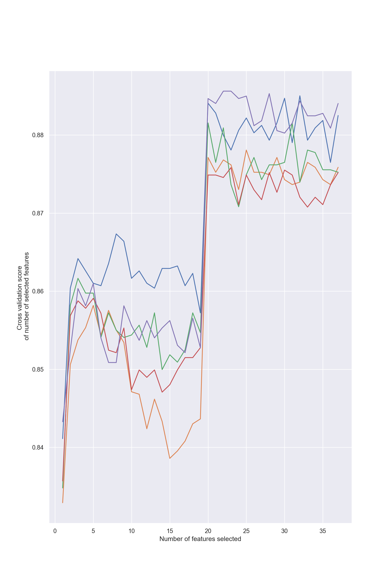

Introduction
Hi Everyone. Its been awhile since my last blog post. I have been occupied with writing and research meeting, among other things. I have had the opportunity to work with several large-scale data sets from start to finish (i.e., planning research ideas, data cleaning, interpreting patterns, and translating insights for the audience. That is why I want to post some of my ideas to this blog to share with you with it is like to work with data from one end to another. In this post, I will be predicting students high school dropout rate through the usage of a large-scale educational data set.
My work is largely in the field of educational data mining (EDM), which is the method of knowledge discovery from educational databases (Elatia et al., 2016). Such data is usually extracted from sources such as students interactive learning environment, computerized testing, and large-scale assessment data repository (International Educational Data Mining Society, 2022). The data set I use in this posting is the High School Longitudinal Study of 2009, which is a longitudinal data set that tracks the transition of American youth from secondary schooling to subsequent education and work roles.
The original data set has 4014 variables and 23,503 cases that were collected from students base year (2009), first follow-up (2012), 2013 update collection (2013), high school transcripts (20132014), and second follow-up (2016). First, I chose a handful of variables based on theories that are relevant to the prediction of students school dropout.
After the initial screening, we have 67 variables left. Then, I further removed responses that were not answered by students or their parents to preserve data representation. I use
dataexplorerpackage to examine types and missingness of the variables. Figure 1 below shows that the data set largely consists of categorical variables then continuous variables. The data also has a bit of missing data.
Data Preprocessing
- To further clean up the data, variables with more than 30% missingness were removed, and the rest missing data was imputed with Random Forest algorithm based on the multivariate imputation by chained equation method. I have done everything in advance to save time. Here is the cleaned data. I will also load the following packages for data preprocessing.
- At this point, the data set has 51 variables and 16137 cases. I
converted some variables into factors to reflect their nature with
as.factorfunction. I also mapped correlation matrix of the data set to examine variables that are not related to one another.
Show code
hsls_30_rf <- hsls_30_rf %>%
as.data.frame() %>%
mutate(across(c(X1SEX, X1RACE, X1MOMRESP,
X1MOMEDU, X1MOMRACE, X1DADRESP,
X1DADEDU, X1DADRACE, X1HHNUMBER,
X1STUEDEXPCT, X1PAREDEXPCT, X1TMRACE,
X1TMCERT,
X1LOCALE, X1REGION, S1NOHWDN,
S1NOPAPER, S1NOBOOKS, S1LATE,
S1PAYOFF, S1GETINTOCLG, S1AFFORD,
S1WORKING, S1FRNDGRADES, S1FRNDSCHOOL,
S1FRNDCLASS, S1FRNDCLG, S1HRMHOMEWK,
S1HRSHOMEWK, S1SUREHSGRAD, P1BEHAVE,
P1ATTEND, P1PERFORM, P1HWOFTEN,
X4EVERDROP, X4PSENRSTLV), as.factor))
- Based on the above correlation matrix and theoretical relevance,
variables that are recommended for removal are:
X1RACE,X1MOMRACE,X1DADRACE,X1LOCALE,P1HWOFTEN,X1HHNUMBER,X1TMCERT,X1REGION,X1MOMRESP,X1DADRESP,X1SEX,X1TMRACE,X1TSRACE,X1MTHUTI.They are removed because 1) they are not theoretically related to the prediction of high school dropout and 2) they have insignificant correlation that might negatively impact the prediction result.
- After uncorrelated variables were removed, we have 38 variables left. The new correlation matrix is as follows:
Data Augmentation
- After the initial data preprocessing in R, I will use Python to perform machine learning. I personally use R for data exploration/statistical analysis and Python for machine learning. First, I will initiate Python environment and import necessary modules.
Show code
import pandas as pd
import numpy as np
import matplotlib.pyplot as plt
import seaborn as sns
from collections import Counter
from sklearn.manifold import TSNE
import warnings
warnings.filterwarnings("ignore")
RANDOM_STATE = 123- Then, I will transfer the data set to Python environment because the two languages run in parallel instead of on the same ground.
Show code
df = r.hsls_30_rf_final
df['X4EVERDROP'] = np.where(df['X4EVERDROP'] == "0", 0, 1)
df.head() X1MOMEDU X1DADEDU X1SES ... P1PERFORM X4EVERDROP X4PSENRSTLV
0 5 5 1.5644 ... 1 0 1
1 3 2 -0.3699 ... 1 0 0
2 7 0 1.2741 ... 1 0 1
3 4 0 0.1495 ... 1 1 2
4 3 3 1.0639 ... 1 0 1
[5 rows x 38 columns]- From the data set, I will extract the predictors (X) and the targeted variable (y). I will also check class proportion of the targeted variable to see if they are balanced.
Show code
X_extreme = df.drop('X4EVERDROP', axis=1)
y_extreme = df['X4EVERDROP']
print("The proportion of target variable's class :", Counter(y_extreme))The proportion of target variable's class : Counter({0: 14133, 1: 2004})- We can see that the data is imbalanced. We have 14133 cases of student who did not and 2004 student who dropped out of their high school. Class imbalance problem in educational data sets could hamper the accuracy of predictive models as many of them are designed on the assumption that the predicted class is balanced (He & Ma, 2013). This problem is especially prevalent in the prediction of high-stakes educational issues such as such as school dropout or grade repetition, where discrepancy between two classes is high due to its rare occurrence (Barros et al., 2019).
- I will visualize the imbalance with a t-Distributed Stochastic Neighbor Embedding (tSNE) plot and a count plot.
Show code
tsne = TSNE(n_components=2, random_state=RANDOM_STATE)
TSNE_result = tsne.fit_transform(X_extreme)
plt.figure(figsize=(12,8))
sns.scatterplot(TSNE_result[:,0], TSNE_result[:,1], hue=y_extreme, legend='full', palette="hls")
plt.show()Show code
sns.set_theme(style="darkgrid")
sns.countplot(x="X4EVERDROP", data = df)
plt.show()- In my previous post, I used the combination of Synthetic Minority Oversampling TEchnique (SMOTE) and Edited Nearest Neighbor (ENN). The thing is, SMOTE+ENN only works with numerical variables. We have a lot of categorical variables in this data set, so we need to find a workaround for that. I will use SMOTE for nominal and continuous variable (SMOTE-NC) and random undersampling instead instead.
Show code
from imblearn.over_sampling import SMOTENC
from imblearn.under_sampling import RandomUnderSampler
from sklearn.model_selection import train_test_split
smote_nc = SMOTENC(random_state=RANDOM_STATE, sampling_strategy=0.8,
categorical_features=[0, 1, 10, 11, 17, 18, 19, 20, 21, 22, 23, 24, 25, 26, 27, 28, 29, 30, 32, 33, 34, 35, 36])
rus_hybrid = RandomUnderSampler(random_state=RANDOM_STATE, sampling_strategy='not minority')
X_smote_extreme, y_smote_extreme = smote_nc.fit_resample(X_extreme, y_extreme)
X_hybrid_extreme, y_hybrid_extreme = rus_hybrid.fit_resample(X_smote_extreme, y_smote_extreme)
print("For Y extreme :", Counter(y_extreme))For Y extreme : Counter({0: 14133, 1: 2004})Show code
print("For Y smote extreme :", Counter(y_smote_extreme))For Y smote extreme : Counter({0: 14133, 1: 11306})Show code
print("For Y hybrid extreme :", Counter(y_hybrid_extreme))For Y hybrid extreme : Counter({0: 11306, 1: 11306})Show code
X_train_hybrid_ext, X_test_hybrid_ext, y_train_hybrid_ext, y_test_hybrid_ext = train_test_split(X_hybrid_extreme, y_hybrid_extreme, test_size = 0.30, random_state = RANDOM_STATE)- After we finished augmenting the data, below is the result. We have much more instances of student who dropped out of their high school as seen from the tSNE plot and the count plot below.
Show code
TSNE_result = tsne.fit_transform(X_hybrid_extreme)
plt.figure(figsize=(12,8))
sns.scatterplot(TSNE_result[:,0], TSNE_result[:,1], hue=y_hybrid_extreme, legend='full', palette="hls")
plt.show()
Show code
sns.set_theme(style="darkgrid")
sns.countplot(y_hybrid_extreme)
plt.show()- Next, we will proceed to the classification stage. For many classification algorithms such as XGBoost or Random Forest, you need to transform categorical variables into numerical variables with label encoding or one-hot encoding first. However, we have a lot of categorical variables that may hamper the process. To circumvent this, we will use CatBoost, which is a gradient boosting decision tree that supports categorical variables without the need for data transformation.
Classification
Show code
from sklearn.feature_selection import RFECV
from catboost import CatBoostClassifier
from sklearn.model_selection import RandomizedSearchCV- First, we will create a CatBoost object as well as a list of hyperparameters to tune. We can use the default mode of CatBoost, but tuning the algorithm makes the algorithm perform better. I will tune tree depth, learning rate, and the number of iteration that the machine learns. I use randomized grid search to tune the algorithm to save time.
Show code
CBC = CatBoostClassifier(random_state=RANDOM_STATE)
parameters = {'depth' : [4,5,6,7,8,9,10],
'learning_rate' : [0.01,0.02,0.03,0.04,0.05],
'iterations' : [10,20,30,40,50,60,70,80,90,100]
}
cat_features = [0, 1, 10, 11, 17, 18, 19, 20, 21, 22, 23, 24, 25, 26, 27, 28, 29, 30, 32, 33, 34, 35, 36]
Cat_random = RandomizedSearchCV(estimator = CBC,
param_distributions = parameters,
n_iter = 10, cv = 3, verbose=0,
random_state = RANDOM_STATE, error_score='raise')
Cat_random.fit(X_train_hybrid_ext, y_train_hybrid_ext, cat_features = cat_features)RandomizedSearchCV(cv=3, error_score='raise',
estimator=<catboost.core.CatBoostClassifier object at 0x000002EB0C40ECD0>,
param_distributions={'depth': [4, 5, 6, 7, 8, 9, 10],
'iterations': [10, 20, 30, 40, 50, 60,
70, 80, 90, 100],
'learning_rate': [0.01, 0.02, 0.03,
0.04, 0.05]},
random_state=123)In a Jupyter environment, please rerun this cell to show the HTML representation or trust the notebook. On GitHub, the HTML representation is unable to render, please try loading this page with nbviewer.org.
RandomizedSearchCV(cv=3, error_score='raise',
estimator=<catboost.core.CatBoostClassifier object at 0x000002EB0C40ECD0>,
param_distributions={'depth': [4, 5, 6, 7, 8, 9, 10],
'iterations': [10, 20, 30, 40, 50, 60,
70, 80, 90, 100],
'learning_rate': [0.01, 0.02, 0.03,
0.04, 0.05]},
random_state=123)<catboost.core.CatBoostClassifier object at 0x000002EB0C40ECD0>
<catboost.core.CatBoostClassifier object at 0x000002EB0C40ECD0>
- After the tuning, I will print out the grid search result. The best hyperparameter values we have are learning_rate = 0.05, iterations = 80, and depth = 8. I will then let the machine learn from the data by fitting the model.
Show code
print(" Results from Grid Search " ) Results from Grid Search Show code
print("\n The best estimator across ALL searched params:\n",Cat_random.best_estimator_)
The best estimator across ALL searched params:
<catboost.core.CatBoostClassifier object at 0x000002EB0C3DD9D0>Show code
print("\n The best score across ALL searched params:\n",Cat_random.best_score_)
The best score across ALL searched params:
0.8718094516047511Show code
print("\n The best parameters across ALL searched params:\n",Cat_random.best_params_)
The best parameters across ALL searched params:
{'learning_rate': 0.05, 'iterations': 80, 'depth': 8}Show code
CBC_tuned = CatBoostClassifier(learning_rate = 0.05, iterations = 80, depth = 8, random_state=RANDOM_STATE)
CBC_tuned.fit(X_train_hybrid_ext, y_train_hybrid_ext, cat_features = cat_features)0: learn: 0.6665327 total: 119ms remaining: 9.42s
1: learn: 0.6464428 total: 257ms remaining: 10s
2: learn: 0.6274255 total: 398ms remaining: 10.2s
3: learn: 0.6038900 total: 536ms remaining: 10.2s
4: learn: 0.5853056 total: 675ms remaining: 10.1s
5: learn: 0.5711453 total: 825ms remaining: 10.2s
6: learn: 0.5518932 total: 968ms remaining: 10.1s
7: learn: 0.5371312 total: 1.12s remaining: 10.1s
8: learn: 0.5246082 total: 1.3s remaining: 10.2s
9: learn: 0.5108871 total: 1.47s remaining: 10.3s
10: learn: 0.5017540 total: 1.64s remaining: 10.3s
11: learn: 0.4914030 total: 1.82s remaining: 10.3s
12: learn: 0.4829017 total: 1.99s remaining: 10.3s
13: learn: 0.4753740 total: 2.16s remaining: 10.2s
14: learn: 0.4684517 total: 2.37s remaining: 10.3s
15: learn: 0.4595894 total: 2.56s remaining: 10.2s
16: learn: 0.4516042 total: 2.73s remaining: 10.1s
17: learn: 0.4452736 total: 2.92s remaining: 10s
18: learn: 0.4382162 total: 3.1s remaining: 9.95s
19: learn: 0.4326054 total: 3.3s remaining: 9.91s
20: learn: 0.4268372 total: 3.61s remaining: 10.1s
21: learn: 0.4202041 total: 4.18s remaining: 11s
22: learn: 0.4167642 total: 4.44s remaining: 11s
23: learn: 0.4122437 total: 4.65s remaining: 10.8s
24: learn: 0.4093793 total: 4.89s remaining: 10.8s
25: learn: 0.4039919 total: 5.1s remaining: 10.6s
26: learn: 0.4004563 total: 5.47s remaining: 10.7s
27: learn: 0.3975197 total: 5.67s remaining: 10.5s
28: learn: 0.3932144 total: 5.93s remaining: 10.4s
29: learn: 0.3904852 total: 6.15s remaining: 10.3s
30: learn: 0.3880708 total: 6.4s remaining: 10.1s
31: learn: 0.3859222 total: 6.59s remaining: 9.89s
32: learn: 0.3831005 total: 6.79s remaining: 9.67s
33: learn: 0.3810144 total: 6.99s remaining: 9.46s
34: learn: 0.3785504 total: 7.18s remaining: 9.23s
35: learn: 0.3761624 total: 7.38s remaining: 9.02s
36: learn: 0.3737088 total: 7.57s remaining: 8.79s
37: learn: 0.3712488 total: 7.77s remaining: 8.59s
38: learn: 0.3685311 total: 7.96s remaining: 8.37s
39: learn: 0.3662991 total: 8.15s remaining: 8.15s
40: learn: 0.3634880 total: 8.34s remaining: 7.93s
41: learn: 0.3606838 total: 8.53s remaining: 7.72s
42: learn: 0.3587348 total: 8.72s remaining: 7.51s
43: learn: 0.3567398 total: 8.92s remaining: 7.3s
44: learn: 0.3548707 total: 9.11s remaining: 7.08s
45: learn: 0.3520839 total: 9.3s remaining: 6.87s
46: learn: 0.3492787 total: 9.49s remaining: 6.66s
47: learn: 0.3467724 total: 9.69s remaining: 6.46s
48: learn: 0.3430803 total: 9.87s remaining: 6.25s
49: learn: 0.3411632 total: 10.1s remaining: 6.04s
50: learn: 0.3396453 total: 10.3s remaining: 5.83s
51: learn: 0.3377685 total: 10.4s remaining: 5.62s
52: learn: 0.3362602 total: 10.6s remaining: 5.4s
53: learn: 0.3349568 total: 10.8s remaining: 5.19s
54: learn: 0.3336092 total: 10.9s remaining: 4.97s
55: learn: 0.3318186 total: 11.1s remaining: 4.76s
56: learn: 0.3287766 total: 11.3s remaining: 4.55s
57: learn: 0.3268753 total: 11.5s remaining: 4.34s
58: learn: 0.3251920 total: 11.6s remaining: 4.14s
59: learn: 0.3227292 total: 11.8s remaining: 3.94s
60: learn: 0.3213152 total: 12s remaining: 3.74s
61: learn: 0.3192716 total: 12.2s remaining: 3.54s
62: learn: 0.3183261 total: 12.3s remaining: 3.33s
63: learn: 0.3171622 total: 12.5s remaining: 3.13s
64: learn: 0.3159563 total: 12.8s remaining: 2.94s
65: learn: 0.3143367 total: 13s remaining: 2.75s
66: learn: 0.3133019 total: 13.1s remaining: 2.55s
67: learn: 0.3122973 total: 13.3s remaining: 2.35s
68: learn: 0.3103480 total: 13.5s remaining: 2.15s
69: learn: 0.3093429 total: 13.7s remaining: 1.96s
70: learn: 0.3081943 total: 14.2s remaining: 1.8s
71: learn: 0.3067472 total: 14.7s remaining: 1.63s
72: learn: 0.3058445 total: 14.9s remaining: 1.43s
73: learn: 0.3047133 total: 15.2s remaining: 1.23s
74: learn: 0.3035925 total: 15.4s remaining: 1.03s
75: learn: 0.3022633 total: 15.6s remaining: 821ms
76: learn: 0.3011552 total: 15.8s remaining: 617ms
77: learn: 0.2998250 total: 16.1s remaining: 412ms
78: learn: 0.2985347 total: 16.3s remaining: 206ms
79: learn: 0.2977599 total: 16.5s remaining: 0us
<catboost.core.CatBoostClassifier object at 0x000002EB0C40E040>We have 38 variables. We can use all of them, but we can also further reduce them for to look for the most relevant variables to the model. We can trim the variable with recursive feature elimination (RFE), which is a feature selection method that fits the model and remove the weakest feature (or predictor) iteratively until the optimal number of features is found (Guyon et al., 2022). Note that this process is entirely data-driven, meaning that the machine decides which variable solely based on the data, not the theory. In this post, I use a variant of RFE called RFE with cross validation (RFECV) that selects the best subset of features based on the cross-validation score of the model. RFECV is a bit
I have computed RFECV in advance to save time. Below is the result. Performance of the model jumped at 20 features and fluctuated after that, meaning that the optimal number of features is 20.
Show code
rfecv_model = RFECV(estimator=CBC_tuned, step=1, cv=5 ,scoring='accuracy')
rfecv = rfecv_model.fit(X_train_hybrid_ext, y_train_hybrid_ext)
print('Optimal number of features :', rfecv.n_features_)
print('Best features :', X_train_hybrid_ext.columns[rfecv.support_])
print('Original features :', X_train_hybrid_ext.columns)
plt.figure(figsize=(10, 15), dpi=800)
plt.xlabel("Number of features selected")
plt.ylabel("Cross validation score \n of number of selected features")
plt.plot(range(1, len(rfecv.grid_scores_) + 1), rfecv.grid_scores_)
plt.show()
- The optimal set of features are
X1MOMEDU,X1DADEDU,X1MTHEFF,X1SCIUTI,X1SCIEFF,X1SCHOOLBEL,X1SCHOOLENG,X1STUEDEXPCT,X1SCHOOLCLI,X1COUPERCOU,X1COUPERPRI,X3TGPA9TH,S1NOHWDN,S1NOPAPER,S1GETINTOCLG,S1WORKING,S1HRMHOMEWK,S1HRSHOMEWK,S1HROTHHOMWK,X4PSENRSTLV. I will reduce the number of variable based on the RFECV result and create a training and a testing data set.
Show code
X_hybrid_extreme_trim = X_hybrid_extreme[['X1MOMEDU', 'X1DADEDU', 'X1MTHEFF', 'X1SCIUTI', 'X1SCIEFF','X1SCHOOLBEL', 'X1SCHOOLENG', 'X1STUEDEXPCT', 'X1SCHOOLCLI',
'X1COUPERCOU', 'X1COUPERPRI', 'X3TGPA9TH', 'S1NOHWDN', 'S1NOPAPER',
'S1GETINTOCLG', 'S1WORKING', 'S1HRMHOMEWK', 'S1HRSHOMEWK', 'S1HROTHHOMWK', 'X4PSENRSTLV']]
X_train_hybrid_ext, X_test_hybrid_ext, y_train_hybrid_ext, y_test_hybrid_ext = train_test_split(X_hybrid_extreme_trim, y_hybrid_extreme, test_size = 0.30, random_state = RANDOM_STATE)- Then, I will fit the CatBoost model I created earlier with this new data set and use it to predict the testing data set.
Show code
cat_features_post_trim = [0, 1, 7, 12, 13, 14, 15,16, 17, 19]
CBC_tuned.fit(X_train_hybrid_ext, y_train_hybrid_ext, cat_features = cat_features_post_trim)0: learn: 0.6630968 total: 110ms remaining: 8.7s
1: learn: 0.6347421 total: 202ms remaining: 7.89s
2: learn: 0.6135360 total: 298ms remaining: 7.65s
3: learn: 0.5958557 total: 390ms remaining: 7.41s
4: learn: 0.5789939 total: 489ms remaining: 7.34s
5: learn: 0.5568907 total: 581ms remaining: 7.17s
6: learn: 0.5378680 total: 686ms remaining: 7.16s
7: learn: 0.5226018 total: 800ms remaining: 7.2s
8: learn: 0.5087498 total: 905ms remaining: 7.14s
9: learn: 0.5009270 total: 1.03s remaining: 7.2s
10: learn: 0.4841922 total: 1.18s remaining: 7.38s
11: learn: 0.4746953 total: 1.3s remaining: 7.35s
12: learn: 0.4681778 total: 1.42s remaining: 7.31s
13: learn: 0.4612541 total: 1.56s remaining: 7.34s
14: learn: 0.4532992 total: 1.71s remaining: 7.4s
15: learn: 0.4450863 total: 1.85s remaining: 7.39s
16: learn: 0.4375271 total: 1.98s remaining: 7.35s
17: learn: 0.4308885 total: 2.13s remaining: 7.33s
18: learn: 0.4254128 total: 2.25s remaining: 7.23s
19: learn: 0.4213425 total: 2.37s remaining: 7.12s
20: learn: 0.4177958 total: 2.51s remaining: 7.05s
21: learn: 0.4131347 total: 2.64s remaining: 6.95s
22: learn: 0.4089653 total: 2.81s remaining: 6.95s
23: learn: 0.4055672 total: 2.96s remaining: 6.91s
24: learn: 0.4030118 total: 3.12s remaining: 6.87s
25: learn: 0.3997708 total: 3.3s remaining: 6.85s
26: learn: 0.3945504 total: 3.44s remaining: 6.75s
27: learn: 0.3909571 total: 3.59s remaining: 6.67s
28: learn: 0.3874681 total: 3.74s remaining: 6.58s
29: learn: 0.3842159 total: 3.88s remaining: 6.46s
30: learn: 0.3817295 total: 4.02s remaining: 6.36s
31: learn: 0.3793464 total: 4.16s remaining: 6.24s
32: learn: 0.3760956 total: 4.28s remaining: 6.1s
33: learn: 0.3744325 total: 4.41s remaining: 5.97s
34: learn: 0.3711698 total: 4.55s remaining: 5.85s
35: learn: 0.3690638 total: 4.68s remaining: 5.72s
36: learn: 0.3659461 total: 4.82s remaining: 5.61s
37: learn: 0.3637044 total: 4.96s remaining: 5.48s
38: learn: 0.3621688 total: 5.08s remaining: 5.35s
39: learn: 0.3601269 total: 5.21s remaining: 5.21s
40: learn: 0.3580019 total: 5.33s remaining: 5.07s
41: learn: 0.3567636 total: 5.47s remaining: 4.95s
42: learn: 0.3544761 total: 5.6s remaining: 4.82s
43: learn: 0.3505973 total: 5.74s remaining: 4.7s
44: learn: 0.3495149 total: 5.87s remaining: 4.56s
45: learn: 0.3476525 total: 6s remaining: 4.43s
46: learn: 0.3462577 total: 6.13s remaining: 4.3s
47: learn: 0.3445400 total: 6.25s remaining: 4.17s
48: learn: 0.3427600 total: 6.38s remaining: 4.04s
49: learn: 0.3408402 total: 6.52s remaining: 3.91s
50: learn: 0.3381710 total: 6.65s remaining: 3.78s
51: learn: 0.3364197 total: 6.8s remaining: 3.66s
52: learn: 0.3339518 total: 6.93s remaining: 3.53s
53: learn: 0.3311018 total: 7.07s remaining: 3.4s
54: learn: 0.3294152 total: 7.21s remaining: 3.28s
55: learn: 0.3280687 total: 7.35s remaining: 3.15s
56: learn: 0.3269127 total: 7.48s remaining: 3.02s
57: learn: 0.3252681 total: 7.62s remaining: 2.89s
58: learn: 0.3243089 total: 7.75s remaining: 2.76s
59: learn: 0.3212165 total: 7.88s remaining: 2.63s
60: learn: 0.3201323 total: 8.02s remaining: 2.5s
61: learn: 0.3189120 total: 8.16s remaining: 2.37s
62: learn: 0.3178599 total: 8.31s remaining: 2.24s
63: learn: 0.3169985 total: 8.45s remaining: 2.11s
64: learn: 0.3154376 total: 8.59s remaining: 1.98s
65: learn: 0.3142858 total: 8.72s remaining: 1.85s
66: learn: 0.3130732 total: 8.86s remaining: 1.72s
67: learn: 0.3115498 total: 8.99s remaining: 1.59s
68: learn: 0.3106751 total: 9.13s remaining: 1.46s
69: learn: 0.3104327 total: 9.2s remaining: 1.31s
70: learn: 0.3094918 total: 9.25s remaining: 1.17s
71: learn: 0.3084260 total: 9.38s remaining: 1.04s
72: learn: 0.3070031 total: 9.51s remaining: 912ms
73: learn: 0.3052639 total: 9.65s remaining: 782ms
74: learn: 0.3043254 total: 9.78s remaining: 652ms
75: learn: 0.3038159 total: 9.85s remaining: 519ms
76: learn: 0.3029093 total: 9.99s remaining: 389ms
77: learn: 0.3014591 total: 10.1s remaining: 260ms
78: learn: 0.2992314 total: 10.3s remaining: 130ms
79: learn: 0.2984094 total: 10.4s remaining: 0us
<catboost.core.CatBoostClassifier object at 0x000002EB0C40E040>- Results from classification report are satisfactory as seen from the macro average of precision, recall, and f1-score. I also show the receiver operating characteristic curve below.
Show code
from sklearn.metrics import roc_auc_score
from sklearn.metrics import classification_report
pred_ext = CBC_tuned.predict(X_test_hybrid_ext)
print(classification_report(y_test_hybrid_ext, pred_ext)) precision recall f1-score support
0 0.86 0.92 0.88 3351
1 0.91 0.85 0.88 3433
accuracy 0.88 6784
macro avg 0.88 0.88 0.88 6784
weighted avg 0.88 0.88 0.88 6784Show code
roc_auc_score(y_test_hybrid_ext, pred_ext)0.8827700805886101Show code
from sklearn import metrics
y_pred_proba_cat = CBC_tuned.predict_proba(X_test_hybrid_ext)[::,1]
fpr_cat, tpr_cat, _ = metrics.roc_curve(y_test_hybrid_ext, y_pred_proba_cat)
auc_cat = metrics.roc_auc_score(y_test_hybrid_ext, y_pred_proba_cat)
#create ROC curve
plt.plot(fpr_cat,tpr_cat, label="ROC_AUC="+str(auc_cat.round(3)))[<matplotlib.lines.Line2D object at 0x000002EB0D5E3160>]Show code
plt.legend(loc="lower right")<matplotlib.legend.Legend object at 0x000002EB0D5E3E20>Show code
plt.ylabel('True Positive Rate')Text(0, 0.5, 'True Positive Rate')Show code
plt.xlabel('False Positive Rate')
# displaying the titleText(0.5, 0, 'False Positive Rate')Show code
plt.title("Area Under Curve")Text(0.5, 1.0, 'Area Under Curve')Show code
plt.show()- I also visualize feature importance of the model below. The most impactful predictor to students high school dropout is their last year GPA, followed by hours spent doing homework on typical school days, and their self-efficacy in mathematics.
Show code
from matplotlib.pyplot import figure
importances_cat = pd.Series(CBC_tuned.feature_importances_, index = X_hybrid_extreme_trim.columns)
sorted_importance_cat = importances_cat.sort_values()
#Horizontal bar plot
sorted_importance_cat.plot(kind='barh', color='lightgreen');
plt.xlabel('Feature Importance Score')Text(0.5, 0, 'Feature Importance Score')Show code
plt.ylabel('Features')Text(0, 0.5, 'Features')Show code
plt.title("Visualizing Important Features")Text(0.5, 1.0, 'Visualizing Important Features')Show code
plt.rcParams["figure.figsize"] = (8, 4)
plt.show()Conclusion
The point of this post is to demonstrate how EDM can be used with large-scale educational data to derive insights and potentially apply it to practice. We started out with a lot of variables (4014), then we reduce it based on the relevant theory to 67, based on missing data to 51, based on correlation coefficient to 38, and based on RFECV to 20.
We might want to select variables that are actionable for the model to be meaningful. For example, saying that a student is likely to dropout of their high school because of their socio-economic status might not be as helpful because you cannot change their family income in a matter of days or months. However, saying that their GPA and hours spent on home work are influencing factors might allow students to adjust their learning behavior.
With a meaningful model, an early warning system can be developed to alert teachers of potential under-performing students for an early intervention. However, I do not mean that results from the model is perfect. It should be used in conjunction with other indicators such as student record, parents observation, and behavior note. As education goes online or semi-online, records of student data can be leveraged to better understand them and ultimately benefit the teaching practice.